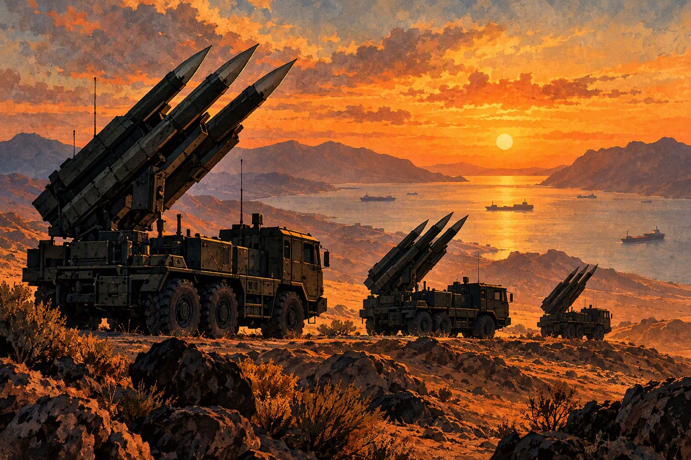
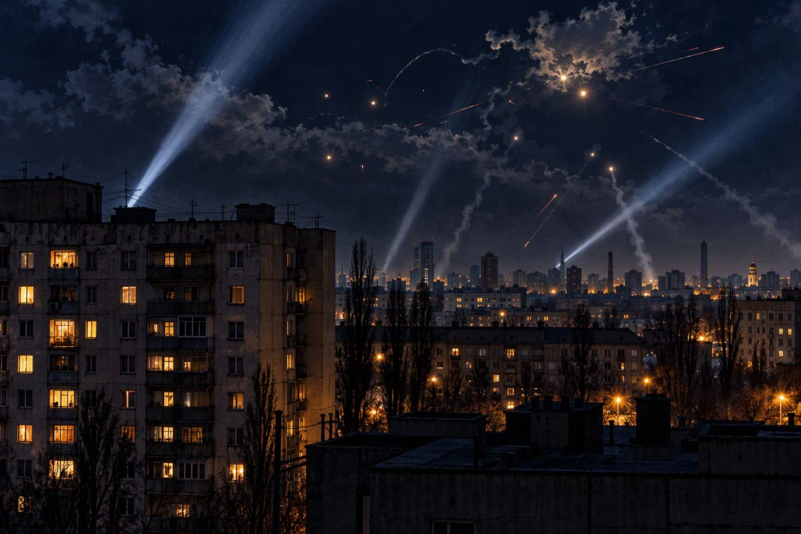
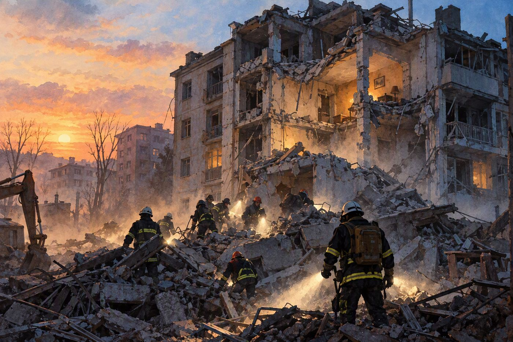

Parada de autobús dañada en una calle en otoño. Ilustración: Geojournalnews.
Rusia vs. Ucrania
Una bomba planeadora rusa mata al menos a 33 personas en una parada de autobús de Kramatorsk
Es el segundo ataque masivo contra civiles en dos días, tras los 22 muertos de Priluki.
Kramatorsk · Donetsk · 1 min de lectura
Al menos 33 personas murieron y 18 resultaron heridas este jueves cuando una bomba aérea rusa alcanzó una parada de autobús en Kramatorsk, en la región de Donetsk, según los servicios de emergencia ucranianos. Los primeros balances hablaban de 12 muertos; la Fiscalía regional los elevó después a 30 y más tarde se confirmaron 33. Según la Fiscalía, en el epicentro de la explosión había dos autobuses, y el arma habría sido una bomba planeadora UMPB D-30 SN.
EE. UU. vs. Irán
Los ataques a petroleros en Ormuz marcan su máximo semanal del año y el paso de crudo cae un 27 %
Diez buques cisterna fueron atacados entre el 28 de septiembre y el 4 de octubre, según la UKMTO.
Nicaragua
Ortega y Murillo se opusieron en 2009 a que Panamá saliera del Parlacen por decisión propia
Hace 17 años, Managua defendió que ningún país podía retirarse unilateralmente; ahora hace lo mismo.
Conflicto israelí
Israel llega a las elecciones del 27 de octubre con el 7 de octubre en el centro de la campaña
Una derrota pondría fin, probablemente, a la carrera de Netanyahu.
Los tres frentes, en una línea
EE. UU. vs. Irán
Ataques a petroleros en máximo semanal del año; Teherán exige siete condiciones y el CENTCOM dice controlar Ormuz.
La onda tropical 43 aumentará las lluvias esta semana.
Combustibles
El INE no había publicado el ajuste de precios de esta semana al cierre de la edición.
El petróleo WTI abrió hoy con un alza del 4 %: si se mantiene, presionará los precios de la próxima semana.
Nota del editor
Desde hoy, cada noticia lleva una ilustración propia o una infografía hecha con los datos de la nota. Ya no usamos fotos de archivo de terceros: cuando haya fotos oficiales del día con licencia abierta o fotos cedidas por sus autores, las publicaremos con su crédito.
La Redacción
Mercados
Cierre del miércoles 7 de octubre · minigráfico: cierres del 6 y 7 de octubre
Dow Jones
51.179,87
−0,66 %
S&P 500
7.801,77
−0,22 %
Nasdaq
27.538,69
−0,22 %
Russell 2000
2.793,20
−1,31 %
IPC México
64.653,33
−1,01 %
WTI
88,28 $
−1,30 %
Oro
4.128 $
−1,41 %
Bono EE. UU. 10 años
5,282 %
máx. desde 2002
El Nasdaq: EFE registra −0,22 % y El CEO −0,77 %; usamos la cifra de EFE.
Cómo cerró Wall Street
Los índices se alejaron de sus récords del martes por el salto de los bonos del Tesoro a máximos desde 2002. Cayeron bancos, inmobiliarias y constructoras.
En México, la BMV cortó tres días de alzas y perdió los 65.000 puntos.
Hoy, jueves 8
WTI +4 % en la apertura (91,80 $) tras un ataque a un buque cerca de Ormuz.
El Comando Central de EE. UU. asegura que Washington y sus socios «controlan claramente» Ormuz
Golfo Pérsico · 1 min de lectura
El Mando Central de Estados Unidos (CENTCOM) rechazó este jueves las declaraciones de Teherán sobre su dominio del estrecho y afirmó que el tráfico fluye con mercancías y suministros energéticos, entre ellos 20 millones de barriles de…
EE. UU. vs. Irán
Qalibaf: Ormuz no se reabrirá hasta que EE. UU. cumpla las siete condiciones del memorándum de junio
Teherán · 1 min de lectura
El presidente del Parlamento iraní, Mohammad Baqer Qalibaf, reafirmó que el estrecho seguirá cerrado mientras Washington no cumpla las siete condiciones del memorándum de entendimiento firmado en junio. La propuesta iraní plantea un…
EE. UU. vs. Irán
Guterres cierra su visita a Pakistán con la mediación entre Washington y Teherán como eje
Islamabad · 1 min de lectura
El secretario general de la ONU, António Guterres, concluyó este jueves una visita oficial de tres días a Pakistán, la primera desde 2022. Con el primer ministro Shehbaz Sharif abordó la mediación de Islamabad entre Estados Unidos e Irán,…

EE. UU. vs. Irán
La Guardia Revolucionaria advierte de una «respuesta devastadora» ante cualquier nueva agresión contra Irán
Teherán · 1 min de lectura
Según la agencia Fars, citada por El Periódico, el Cuerpo de la Guardia Revolucionaria Islámica advirtió que cualquier error de cálculo o nueva agresión contra Irán tendrá una respuesta dolorosa y devastadora.
EE. UU. vs. Irán
Qatar afirma que las conversaciones entre EE. UU. e Irán «continúan» y que se intercambian mensajes
Doha · 1 min de lectura
El portavoz de Exteriores de Qatar, Ibrahim bin Sultán al Hashmi, dijo el martes que las conversaciones entre Washington y Teherán continúan con Doha como mediador, en un papel que comparte con Pakistán, y que ambas partes intercambian…
EE. UU. vs. Irán
Un ataque contra un buque cisterna frente a Qatar deja «víctimas», según la UKMTO
Costa de Qatar · 1 min de lectura
La agencia de comercio marítimo de la Armada británica (UKMTO) informó el miércoles de un ataque contra un buque cisterna frente a las costas de Qatar que dejó víctimas, sin precisar cuántas.
EE. UU. vs. Irán
La OMS cifra en casi 960 los muertos de la guerra en Yemen desde agosto, mientras se multiplica el cólera
Saná · Riad · 1 min de lectura
Al menos 959 personas han muerto en Yemen desde agosto, según estimaciones de la Organización Mundial de la Salud recogidas por El Periódico, en un contexto en el que los casos de cólera se multiplican.
Rusia vs. Ucrania
7 noticias

Rusia vs. Ucrania
Drones rusos matan a cuatro personas en los distritos de Obolón y Desnianski de Kiev
Kiev · 1 min de lectura
Al menos cuatro personas murieron y doce resultaron heridas en nuevos ataques rusos contra Kiev, según la Policía ucraniana. Dos de las víctimas murieron cuando un dron cayó entre dos edificios residenciales de Obolón, con siete heridos;…

Rusia vs. Ucrania
Termina el rescate en Priluki: 22 muertos, cinco de ellos niños, por un misil ruso
Priluki · Cherníguiv · 1 min de lectura
Zelenski informó que concluyeron las labores de búsqueda y rescate en el edificio de cinco plantas alcanzado el miércoles por un misil ruso en Priluki, al norte de Ucrania. El balance final es de 22 muertos, cinco de ellos niños, y 54…
Rusia vs. Ucrania
Moscú afirma que su ataque masivo apuntó a las fábricas de los misiles ucranianos Flamingo
Moscú · 1 min de lectura
El Ministerio de Defensa ruso aseguró que su ofensiva del miércoles con armas de precisión y drones apuntó contra el complejo militar-industrial ucraniano en Kiev y otras siete regiones. Entre los objetivos citó a Smart Ammunition y al…
Rusia vs. Ucrania
Zelenski anuncia ataques ucranianos contra instalaciones petroleras en tres regiones rusas
Perm · Samara · Astracán · 1 min de lectura
El presidente ucraniano informó el miércoles en X que sus fuerzas atacaron en 24 horas cuatro objetivos que ayudan a Rusia a financiar la guerra, entre ellos dos instalaciones petroleras y un polígono en las regiones de Perm, Samara y…
Rusia vs. Ucrania
La Comisión Europea desembolsa 1.240 millones de euros para drones y misiles fabricados en Ucrania
Bruselas · 1 min de lectura
La Comisión Europea desembolsó el miércoles 1.240 millones de euros para financiar drones, interceptores de drones, municiones y misiles fabricados por empresas ucranianas. El dinero forma parte del préstamo de apoyo a Ucrania por valor de…
Rusia vs. Ucrania
Bulgaria cierra sin supervivientes la búsqueda de los diez marineros del carguero Alfa Watan
Varna · Mar Negro · 1 min de lectura
El servicio de rescate de Bulgaria concluyó sin hallar supervivientes la búsqueda de los diez tripulantes del carguero Alfa Watan, que desaparecieron el martes cuando el buque se hundió en el mar Negro tras un ataque con drones navales y…
Conflicto israelí
5 noticias
Conflicto israelí
Israel cierra el Consulado General británico en Jerusalén como represalia por el veto a productos de las colonias
Jerusalén · 1 min de lectura
El ministro de Exteriores israelí, Gideon Saar, confirmó este jueves el cierre del Consulado General del Reino Unido en Jerusalén Este. El cónsul general y 19 diplomáticos británicos terminarán sus misiones y saldrán de Israel; siete…
Conflicto israelí
Israel recuerda a las víctimas del 7 de octubre con un minuto de silencio a la hora exacta del ataque
Reim · Kfar Aza · 1 min de lectura
En Reim, donde se celebraba el festival Nova, los familiares de las víctimas guardaron un minuto de silencio a las 06:29, la hora en que comenzó el ataque de Hamás hace tres años. También hubo homenajes en el kibutz Kfar Aza, donde 64…
Conflicto israelí
Gaza no tiene ni un hospital plenamente operativo tras casi un año de tregua, denuncia una ONG israelí
Gaza · Jerusalén · 1 min de lectura
De los 36 hospitales de la Franja, 20 funcionan parcialmente, frente a 14 en octubre de 2025, pero ninguno lo hace por completo y todos dependen de generadores, según un informe publicado este jueves por Médicos por los Derechos Humanos de…
Conflicto israelí
Mueren al menos tres palestinos en Gaza, entre ellos un rescatista, pese al alto el fuego
Gaza · 1 min de lectura
Al menos tres palestinos murieron el miércoles por nuevos ataques israelíes contra Gaza, entre ellos Mohamed Tamus, miembro de Protección Civil, alcanzado cuando iba a evacuar a un grupo de heridos cerca del hospital Kamal Aduan, según el…
Nicaragua
7 noticias
Nicaragua
El Parlacen analiza el alcance jurídico de la salida de Nicaragua
Ciudad de Guatemala · 1 min de lectura
El Parlamento Centroamericano, presidido por la diputada guatemalteca Karla Gutiérrez, afirmó que cualquier cambio en la composición de los Estados parte debe tramitarse conforme al derecho internacional y que someterá el caso a sus…
Nicaragua
Médicos alertan de la falta de especialistas en los hospitales públicos de Nicaragua
Bluefields · 1 min de lectura
Un grupo de médicos denunció ante La Prensa la falta de especialistas en los hospitales públicos. Uno de ellos cuestionó las condiciones del hospital de Bluefields, donde murió un niño de 8 años y donde atiende un solo cirujano pediatra.
Nicaragua
Hallan con vida a cinco pescadores nicaragüenses en aguas guatemaltecas tras 23 días desaparecidos
Masachapa · Guatemala · 1 min de lectura
Los cinco pescadores habían salido de Masachapa el 12 de septiembre y fueron encontrados con vida en aguas de Guatemala, según Artículo 66.
Nicaragua
La Prensa denuncia el uso sin rendición de cuentas del fondo cafetalero Conatradec
Managua · 1 min de lectura
Según La Prensa, el gobierno ha gastado en los últimos años, sin rendir cuentas, varios millones de dólares del fondo de la Comisión Nacional de Transformación y Desarrollo de la Caficultura (Conatradec), que se alimenta con un aporte de…
Nicaragua
La ONU muestra preocupación por la inhabilitación de unos 2.000 abogados en Nicaragua
Managua · 1 min de lectura
La inhabilitación de unos 2.000 abogados al margen de la ley preocupa a Naciones Unidas, según informó Artículo 66.
Nicaragua
El DHS asegura que el deportado Jeffrey Jarquín «era un extranjero ilegal con antecedentes penales»
Washington · Managua · 1 min de lectura
El Departamento de Seguridad Nacional de EE. UU. defendió la deportación de Jeffrey Jarquín y lo describió como un extranjero en situación ilegal con antecedentes penales, según Artículo 66.
Política
2 noticias
Política
Flávio Bolsonaro aventaja por seis puntos a Lula en la primera encuesta para la segunda vuelta
Brasilia · 1 min de lectura
El senador Flávio Bolsonaro obtiene el 53 % de la intención de voto frente al 47 % de Luiz Inácio Lula da Silva, según un sondeo de PoderData realizado de lunes a miércoles, el primero publicado tras la primera vuelta. La firma informó un…
Política
Costa Rica inaugurará el 14 de octubre una megacárcel inspirada en el modelo de Bukele
San José · 1 min de lectura
La presidenta Laura Fernández mostró las primeras imágenes del nuevo centro penitenciario, que será inaugurado formalmente el 14 de octubre, según Artículo 66. El gobierno lo presenta como una herramienta contra el crimen organizado.
Economía
6 noticias
Economía
Wall Street se aleja de sus récords con los bonos del Tesoro en máximos desde 2002
Nueva York · 1 min de lectura
El Dow Jones cayó el miércoles un 0,66 %, hasta 51.179,87 puntos, y el S&P 500 un 0,22 %, hasta 7.801,77, un día después de que este índice y el Nasdaq marcaran récords de cierre. El Nasdaq terminó en 27.538,69 puntos; EFE calcula una…
Economía
El petróleo sube un 4 % este jueves tras un ataque a un buque cerca de Ormuz y Wall Street abre en rojo
Nueva York · 1 min de lectura
El crudo de Texas (WTI) subía un 4 %, hasta 91,80 dólares por barril, en la apertura de este jueves, después de que se reportara un ataque contra un buque cerca del estrecho de Ormuz, según EFE. Un día antes había caído un 1,3 %, hasta…
Economía
Los mercados ven un 78 % de probabilidad de que la Fed mantenga las tasas en su próxima reunión
Washington · 1 min de lectura
La herramienta FedWatch de CME Group indicaba el miércoles un 78,4 % de probabilidad de que la Reserva Federal deje las tasas sin cambios y un 21,6 % de una nueva subida de un cuarto de punto. Ese día se publicaron las actas de la última…
Economía
El déficit comercial de EE. UU. se amplía a 105.600 millones de dólares en agosto
Washington · 1 min de lectura
El déficit comercial de Estados Unidos de agosto llegó a 105.600 millones de dólares, una cifra mayor de lo previsto, según el análisis de Admirals.
Economía
La Bolsa Mexicana corta tres días de alzas y pierde los 65.000 puntos
Ciudad de México · 1 min de lectura
El índice IPC de la Bolsa Mexicana de Valores cayó el miércoles un 1,01 %, hasta 64.653,33 puntos, y rompió una racha de tres sesiones en verde. Grupo Aeroportuario del Pacífico fue la peor acción (−4,25 %) y Orbia la mejor (+5,45 %).
Economía
Alemania eleva al 1,3 % su previsión de crecimiento, pendiente de Oriente Medio y Ucrania
Berlín · 1 min de lectura
El gobierno alemán revisó al alza su previsión de crecimiento para 2026, hasta un 1,3 %, ocho décimas más que en primavera, cuando estimó un 0,5 % lastrado por la guerra con Irán y el bloqueo de Ormuz. La ministra de Economía, Katherina…
Cultura
1 noticias
Cultura
Anne Carson, la poeta que dialoga con los clásicos griegos, gana el Nobel de Literatura
Estocolmo · 1 min de lectura
La Academia Sueca premió a la canadiense Anne Carson, de 76 años, por una obra audaz e inventiva que, en diálogo lúdico con la tradición clásica, ha creado nuevas formas para la literatura contemporánea. Carson recibió la noticia en…
Deportes Nicaragua
2 noticias
Deportes Nicaragua
Rivas remonta 3-1 en Granada y empata la Serie Final del Pomares
Granada · 1 min de lectura
El Frente Sur Rivas venció 3-1 a los Tiburones en el segundo juego de la final, disputado el miércoles en el estadio Roque Tadeo Zavala, y empató la serie a una victoria. Granada se adelantó en el primer episodio, Rivas empató en el…
Deportes Nicaragua
Norchad Omier juega su segundo partido de pretemporada con los Timberwolves
Minneapolis · 1 min de lectura
El nicaragüense Norchad Omier disputó su segundo partido con los Minnesota Timberwolves en la pretemporada de la NBA, según La Prensa.
Deportes internacionales
1 noticias
Deportes internacionales
China cierra los Juegos Asiáticos de Aichi-Nagoya con un récord de 169 medallas de oro
Aichi-Nagoya · 1 min de lectura
China confirmó su dominio deportivo en Asia al terminar en el primer lugar del medallero de los Juegos Asiáticos de Aichi-Nagoya 2026, con un récord de 169 medallas de oro, según TN8.
Mundo y clima
1 noticias
Mundo y clima
La onda tropical 43 aumentará las lluvias en Nicaragua esta semana
Nicaragua · 1 min de lectura
El paso de la onda tropical número 43 aumentará las lluvias en Nicaragua durante esta semana, según Artículo 66.
Si solo recuerdas tres cosas de hoy
Ucrania vive su semana más letal para civiles: más de 60 muertos en dos días, mientras EE. UU. intenta organizar una reunión técnica con Rusia a finales de mes.
Ormuz no se calma: récord semanal de ataques, condiciones iraníes sin respuesta y el crudo subiendo hoy un 4 %.
Nicaragua se aísla más: sale del Parlacen pese a haber defendido en 2009 que ningún país podía hacerlo por su cuenta.
Fe de erratas: en la edición del 7 de octubre usamos fotos de archivo de Wikimedia Commons; desde esta edición solo publicamos ilustraciones e infografías propias, fotos oficiales con licencia abierta o fotos cedidas por sus autores.
GEOJOURNALNEWS
EE. UU. vs. Irán
Los ataques a petroleros en Ormuz marcan su máximo semanal del año y el paso de crudo cae un 27 %
Diez buques cisterna fueron atacados entre el 28 de septiembre y el 4 de octubre, según la UKMTO.
Estrecho de Ormuz · 1 min de lectura
Petroleros en un estrecho al amanecer. Ilustración: Geojournalnews.
La agencia británica de Operaciones de Comercio Marítimo (UKMTO) informó que diez buques cisterna fueron atacados en el estrecho de Ormuz entre el 28 de septiembre y el 4 de octubre. Según un informe de la consultora Kpler enviado este jueves a EFE, es la cifra semanal más alta del año, y en esa misma semana el volumen de crudo que cruzó el estrecho cayó un 27 % frente al máximo registrado durante la guerra.
Desde el 4 de octubre se han contabilizado cuatro ataques más. La UKMTO indicó que proyectiles y drones de origen desconocido causaron incendios y evacuaciones, y que la mayoría de los incidentes se produjo del lado omaní del paso, cerca de la ruta meridional que estableció Washington.
Las rutas alternativas, con terminales en el golfo de Omán y el mar Rojo, han permitido mantener las exportaciones totales de crudo de Oriente Medio cerca de los niveles previos a la guerra. Según Kpler, el 40 % de las exportaciones petroleras de la región ya evita cruzar Ormuz. Para importadores de combustible como Nicaragua, cada repunte de ataques se traslada a los precios del crudo y de los fletes.
El Comando Central de EE. UU. asegura que Washington y sus socios «controlan claramente» Ormuz
Golfo Pérsico · 1 min de lectura
Convoy de petroleros escoltado por un destructor. Ilustración: Geojournalnews.
El Mando Central de Estados Unidos (CENTCOM) rechazó este jueves las declaraciones de Teherán sobre su dominio del estrecho y afirmó que el tráfico fluye con mercancías y suministros energéticos, entre ellos 20 millones de barriles de crudo. Según CENTCOM, Estados Unidos y sus socios regionales controlan claramente el paso.
La declaración contrasta con los datos de la UKMTO y de Kpler, que registran un repunte de ataques contra petroleros. El conflicto comenzó el 28 de febrero con la ofensiva conjunta de Estados Unidos e Israel contra instalaciones nucleares iraníes; pese al alto el fuego del 8 de abril, mediado por Pakistán, los choques navales en el estrecho no han cesado.
Qalibaf: Ormuz no se reabrirá hasta que EE. UU. cumpla las siete condiciones del memorándum de junio
Teherán · 1 min de lectura
Hemiciclo vacío con cúpula de estilo persa. Ilustración: Geojournalnews.
El presidente del Parlamento iraní, Mohammad Baqer Qalibaf, reafirmó que el estrecho seguirá cerrado mientras Washington no cumpla las siete condiciones del memorándum de entendimiento firmado en junio. La propuesta iraní plantea un periodo de confianza de siete días para restablecer el tránsito si Estados Unidos acepta, aunque persisten diferencias sobre el orden de los pasos.
El portavoz de Exteriores, Esmaeil Baghaei, descartó conversaciones nucleares con Washington y dijo que la prioridad es la seguridad de la navegación. El canciller Abbas Araqchi advirtió que Irán está preparado para responder si Estados Unidos retoma la vía militar, y el Ejército iraní anunció que ampliará el alcance de sus misiles.
Guterres cierra su visita a Pakistán con la mediación entre Washington y Teherán como eje
Islamabad · 1 min de lectura
Mesa de negociación vacía. Ilustración: Geojournalnews.
El secretario general de la ONU, António Guterres, concluyó este jueves una visita oficial de tres días a Pakistán, la primera desde 2022. Con el primer ministro Shehbaz Sharif abordó la mediación de Islamabad entre Estados Unidos e Irán, la situación en Afganistán y la reforma de la ONU.
Sharif defendió que el diálogo y la diplomacia son la única vía para resolver disputas y evitar una escalada. Pakistán y Qatar ya participaron en junio en la mediación de un acuerdo para detener las hostilidades y reabrir Ormuz, que no logró poner fin a los combates.
La Guardia Revolucionaria advierte de una «respuesta devastadora» ante cualquier nueva agresión contra Irán
Teherán · 1 min de lectura
Lanzadores de misiles al atardecer. Ilustración: Geojournalnews.
Según la agencia Fars, citada por El Periódico, el Cuerpo de la Guardia Revolucionaria Islámica advirtió que cualquier error de cálculo o nueva agresión contra Irán tendrá una respuesta dolorosa y devastadora.
En el mismo mensaje, el cuerpo militar sostuvo que Estados Unidos e Israel han fracasado en todos los frentes y no han logrado su objetivo de debilitar, derrotar y desintegrar a Irán como potencia regional.
Qatar afirma que las conversaciones entre EE. UU. e Irán «continúan» y que se intercambian mensajes
Doha · 1 min de lectura
Infografía: Geojournalnews, con datos de El Periódico.
El portavoz de Exteriores de Qatar, Ibrahim bin Sultán al Hashmi, dijo el martes que las conversaciones entre Washington y Teherán continúan con Doha como mediador, en un papel que comparte con Pakistán, y que ambas partes intercambian mensajes.
Ese mismo día, el emir Tamim bin Hamad al Thani recibió al ministro del Interior iraní, Eskandar Momeni, para analizar la situación regional y los esfuerzos para reducir la tensión, según el Diwan del Emir.
Un ataque contra un buque cisterna frente a Qatar deja «víctimas», según la UKMTO
Costa de Qatar · 1 min de lectura
Infografía: Geojournalnews, con datos de La Opinión de Murcia, Yahoo Finanzas / Reuters.
La agencia de comercio marítimo de la Armada británica (UKMTO) informó el miércoles de un ataque contra un buque cisterna frente a las costas de Qatar que dejó víctimas, sin precisar cuántas.
El incidente ocurrió en medio de las hostilidades contra la navegación en el entorno de Ormuz, sometido desde hace semanas al bloqueo iraní y al bloqueo más amplio impuesto por Estados Unidos. Ese día la UKMTO ya contabilizaba nueve ataques en lo que va de octubre, frente a 18 en todo septiembre.
La OMS cifra en casi 960 los muertos de la guerra en Yemen desde agosto, mientras se multiplica el cólera
Saná · Riad · 1 min de lectura
Casas torre de estilo yemení. Ilustración: Geojournalnews.
Al menos 959 personas han muerto en Yemen desde agosto, según estimaciones de la Organización Mundial de la Salud recogidas por El Periódico, en un contexto en el que los casos de cólera se multiplican.
La guerra con los hutíes amenaza también la estabilidad de Bab el Mandeb, la puerta del mar Rojo y del canal de Suez. El miércoles, el grupo afirmó en X haber atacado con drones y misiles balísticos aeropuertos e instalaciones militares en Arabia Saudí, según Reuters.
Una bomba planeadora rusa mata al menos a 33 personas en una parada de autobús de Kramatorsk
Es el segundo ataque masivo contra civiles en dos días, tras los 22 muertos de Priluki.
Kramatorsk · Donetsk · 1 min de lectura
Parada de autobús dañada en una calle en otoño. Ilustración: Geojournalnews.
Al menos 33 personas murieron y 18 resultaron heridas este jueves cuando una bomba aérea rusa alcanzó una parada de autobús en Kramatorsk, en la región de Donetsk, según los servicios de emergencia ucranianos. Los primeros balances hablaban de 12 muertos; la Fiscalía regional los elevó después a 30 y más tarde se confirmaron 33. Según la Fiscalía, en el epicentro de la explosión había dos autobuses, y el arma habría sido una bomba planeadora UMPB D-30 SN.
El gobernador regional, Vadim Filashkin, acusó a Rusia de atacar deliberadamente autobuses llenos de pasajeros y ordenó suspender el transporte público en Kramatorsk y Sloviansk. Zelenski confirmó el ataque en X y advirtió que no quedará sin respuesta. Gran parte de los cerca de 150.000 habitantes que tenía la ciudad antes de la guerra ya fueron evacuados por la cercanía del frente.
Kramatorsk y Sloviansk forman parte del llamado «cinturón de fortalezas» que Rusia intenta conquistar para controlar todo el Donbás. Según Naciones Unidas, en los primeros ocho meses de este año murieron en Ucrania más civiles que en todo 2025.
Drones rusos matan a cuatro personas en los distritos de Obolón y Desnianski de Kiev
Kiev · 1 min de lectura
Bloques de viviendas de noche con reflectores en el cielo. Ilustración: Geojournalnews.
Al menos cuatro personas murieron y doce resultaron heridas en nuevos ataques rusos contra Kiev, según la Policía ucraniana. Dos de las víctimas murieron cuando un dron cayó entre dos edificios residenciales de Obolón, con siete heridos; otro dron impactó en una casa de Desnianski y mató a dos mujeres, con cinco heridos.
Es el segundo día seguido de ataques contra la capital: el miércoles murieron allí dos personas, en una ofensiva masiva con misiles y drones contra varias regiones que, según EFE, causó al menos 26 muertos en el primer balance y 28 en el último.
Termina el rescate en Priluki: 22 muertos, cinco de ellos niños, por un misil ruso
Priluki · Cherníguiv · 1 min de lectura
Rescatistas ante un edificio derrumbado al amanecer. Ilustración: Geojournalnews.
Zelenski informó que concluyeron las labores de búsqueda y rescate en el edificio de cinco plantas alcanzado el miércoles por un misil ruso en Priluki, al norte de Ucrania. El balance final es de 22 muertos, cinco de ellos niños, y 54 heridos.
Según El Confidencial, el impacto destruyó unas 30 viviendas mientras las familias dormían, y tres de los niños fallecidos tenían apenas un año. El ataque coincidió con el cumpleaños 74 de Putin, lo que Zelenski calificó con ironía de «regalo».
Moscú afirma que su ataque masivo apuntó a las fábricas de los misiles ucranianos Flamingo
Moscú · 1 min de lectura
Infografía: Geojournalnews, con datos de Cadena SER / EFE.
El Ministerio de Defensa ruso aseguró que su ofensiva del miércoles con armas de precisión y drones apuntó contra el complejo militar-industrial ucraniano en Kiev y otras siete regiones. Entre los objetivos citó a Smart Ammunition y al taller Fanplit en Kiev, una papelera en Óbujov, Plastmass-Pryluky en Cherníguiv, la empresa Makarov en Dnipro y Atokraz en Kremenchuk, todas vinculadas, según Moscú, a los misiles de crucero FP-5 Flamingo y a drones de largo alcance.
Ucrania, por su parte, denunció la destrucción de un edificio residencial en Priluki. Las afirmaciones rusas sobre los objetivos no han podido ser verificadas de forma independiente.
Zelenski anuncia ataques ucranianos contra instalaciones petroleras en tres regiones rusas
Perm · Samara · Astracán · 1 min de lectura
Infografía: Geojournalnews, con datos de Cadena SER (mensaje de Zelenski), La Jornada / Reuters.
El presidente ucraniano informó el miércoles en X que sus fuerzas atacaron en 24 horas cuatro objetivos que ayudan a Rusia a financiar la guerra, entre ellos dos instalaciones petroleras y un polígono en las regiones de Perm, Samara y Astracán. Lo presentó como una respuesta a los ataques rusos contra la población.
El domingo, Zelenski había dicho a Reuters que Kiev intensificaría los ataques contra refinerías rusas, y Moscú respondió prometiendo intensificar los suyos contra Ucrania.
La Comisión Europea desembolsa 1.240 millones de euros para drones y misiles fabricados en Ucrania
Bruselas · 1 min de lectura
Infografía: Geojournalnews, con datos de EFE, France 24.
La Comisión Europea desembolsó el miércoles 1.240 millones de euros para financiar drones, interceptores de drones, municiones y misiles fabricados por empresas ucranianas. El dinero forma parte del préstamo de apoyo a Ucrania por valor de 90.000 millones de euros.
El domingo, el canciller alemán Friedrich Merz había visitado Kiev para anunciar un paquete de 1.300 millones de euros para la defensa ucraniana, en pleno repunte de los ataques rusos contra la capital.
Bulgaria cierra sin supervivientes la búsqueda de los diez marineros del carguero Alfa Watan
Varna · Mar Negro · 1 min de lectura
Infografía: Geojournalnews, con datos de EFE, La Jornada / Reuters.
El servicio de rescate de Bulgaria concluyó sin hallar supervivientes la búsqueda de los diez tripulantes del carguero Alfa Watan, que desaparecieron el martes cuando el buque se hundió en el mar Negro tras un ataque con drones navales y aéreos.
El hundimiento se suma a la escalada contra la navegación en el mar Negro. El domingo, Rusia aseguró haber atacado dos cargueros que, según Moscú, llevaban equipo militar hacia el puerto de Odesa.
Israel llega a las elecciones del 27 de octubre con el 7 de octubre en el centro de la campaña
Una derrota pondría fin, probablemente, a la carrera de Netanyahu.
Jerusalén · 1 min de lectura
Infografía: Geojournalnews, con datos de AP / América TeVé, El Espectador, UnoTV / AFP, Identidades (Channel 14), The State of Israel.
Israel celebra el 27 de octubre sus primeras elecciones desde el ataque de Hamás de 2023, y tanto el primer ministro Benjamin Netanyahu como sus rivales han puesto aquella fecha en el centro de la campaña, según AP. Su principal adversario es el exjefe del Estado Mayor Gadi Eisenkot. Una derrota probablemente pondría fin a la carrera de Netanyahu, que está por cumplir 77 años.
Las encuestas no coinciden. El Espectador indica que los sondeos lo sitúan por debajo de Eisenkot; un sondeo de Channel 14 del 2 de octubre daba 64 escaños al bloque de derecha, y otro reciente lo sitúa en 55 frente a 50 de la oposición. Los votantes eligen listas de partidos para los 120 escaños de la Knéset; hacen falta 61 para gobernar y el umbral de entrada es del 3,25 %.
Israel cierra el Consulado General británico en Jerusalén como represalia por el veto a productos de las colonias
Jerusalén · 1 min de lectura
Infografía: Geojournalnews, con datos de La Opinión de Murcia / EFE.
El ministro de Exteriores israelí, Gideon Saar, confirmó este jueves el cierre del Consulado General del Reino Unido en Jerusalén Este. El cónsul general y 19 diplomáticos británicos terminarán sus misiones y saldrán de Israel; siete seguirán en el edificio, pero solo para actividades limitadas y no consulares.
Israel había anunciado la medida hace un mes como represalia por la decisión británica de prohibir la importación de productos de las colonias israelíes en Cisjordania. EFE comprobó que la placa ya fue retirada de la fachada de este consulado histórico, fundado antes de la creación del Estado de Israel.
Israel recuerda a las víctimas del 7 de octubre con un minuto de silencio a la hora exacta del ataque
Reim · Kfar Aza · 1 min de lectura
Infografía: Geojournalnews, con datos de RFI / AFP, Infobae, UnoTV, Cooperativa.
En Reim, donde se celebraba el festival Nova, los familiares de las víctimas guardaron un minuto de silencio a las 06:29, la hora en que comenzó el ataque de Hamás hace tres años. También hubo homenajes en el kibutz Kfar Aza, donde 64 personas fueron asesinadas y 18 secuestradas. El ataque dejó 1.221 muertos y 251 rehenes; es el primer aniversario con todos los rehenes de vuelta en casa.
La conmemoración se hizo con seguridad reforzada después de que el ministro de Defensa, Israel Katz, alertara sobre información de inteligencia de posibles ataques. Hamás calificó la fecha de «día glorioso» en un comunicado, y Cooperativa destacó que las ceremonias concluyeron con Netanyahu ausente.
Gaza no tiene ni un hospital plenamente operativo tras casi un año de tregua, denuncia una ONG israelí
Gaza · Jerusalén · 1 min de lectura
Infografía: Geojournalnews, con datos de Infobae / EFE.
De los 36 hospitales de la Franja, 20 funcionan parcialmente, frente a 14 en octubre de 2025, pero ninguno lo hace por completo y todos dependen de generadores, según un informe publicado este jueves por Médicos por los Derechos Humanos de Israel (PHRI).
Las camas de cuidados intensivos apenas pasaron de 103 a 104 en un año; la hemodiálisis disponible bajó del 17 % al 12 %, y no hay resonancia magnética en ningún lugar de Gaza. La ONG señala que el 69 % de los productos sanitarios aprobados entre enero y mayo nunca llegaron, y pide reabrir el corredor sanitario hacia Cisjordania y Jerusalén Este.
Mueren al menos tres palestinos en Gaza, entre ellos un rescatista, pese al alto el fuego
Gaza · 1 min de lectura
Infografía: Geojournalnews, con datos de La Opinión de Murcia / Europa Press, Expreso / AFP.
Al menos tres palestinos murieron el miércoles por nuevos ataques israelíes contra Gaza, entre ellos Mohamed Tamus, miembro de Protección Civil, alcanzado cuando iba a evacuar a un grupo de heridos cerca del hospital Kamal Aduan, según el diario palestino Filastin citado por Europa Press.
Las cifras del día no coinciden: AFP recogió que las autoridades locales reportaron cinco muertos ese miércoles. La guerra ha dejado más de 74.000 muertos en la Franja, según las autoridades sanitarias de Gaza.
Ortega y Murillo se opusieron en 2009 a que Panamá saliera del Parlacen por decisión propia
Hace 17 años, Managua defendió que ningún país podía retirarse unilateralmente; ahora hace lo mismo.
Managua · 1 min de lectura
Infografía: Geojournalnews, con datos de La Prensa.
El 28 de octubre de 2009, durante el primer gobierno de Daniel Ortega tras su regreso al poder, la Cancillería nicaragüense envió la nota MRE/DM/636/10/09 para rechazar la salida de Panamá del Parlamento Centroamericano. En ella respaldó la tesis de la Corte Centroamericana de Justicia de que ningún Estado podía denunciar unilateralmente el tratado constitutivo, según La Prensa.
Panamá, bajo el gobierno de Ricardo Martinelli, había comunicado su retiro el 19 de agosto de 2009 invocando la Convención de Viena. Las objeciones de Nicaragua, Guatemala y El Salvador quedaron registradas en una sentencia de la Corte del 20 de octubre de 2010. El 3 de octubre de 2026, el gobierno de Ortega y Murillo denunció ese mismo tratado «con efecto inmediato».
El Parlacen analiza el alcance jurídico de la salida de Nicaragua
Ciudad de Guatemala · 1 min de lectura
Infografía: Geojournalnews, con datos de La Hora, HRN / EFE, Artículo 66.
El Parlamento Centroamericano, presidido por la diputada guatemalteca Karla Gutiérrez, afirmó que cualquier cambio en la composición de los Estados parte debe tramitarse conforme al derecho internacional y que someterá el caso a sus órganos internos. Expertos consultados por EFE señalan que el tratado no tiene una cláusula explícita de retiro, por lo que la salida abre una discusión diplomática y jurídica.
Si se concreta, el Parlacen quedaría con cuatro Estados: Guatemala, Honduras, Panamá y República Dominicana, ya que El Salvador está en proceso de salida técnica. Artículo 66 recoge la opinión del analista Eliseo Núñez, para quien Nicaragua «no tiene salida» por esta vía. La decisión de Managua llegó tras la resolución de la OEA que exige elecciones libres y la liberación de los presos políticos.
Médicos alertan de la falta de especialistas en los hospitales públicos de Nicaragua
Bluefields · 1 min de lectura
Infografía: Geojournalnews, con datos de La Prensa, El 19 Digital.
Un grupo de médicos denunció ante La Prensa la falta de especialistas en los hospitales públicos. Uno de ellos cuestionó las condiciones del hospital de Bluefields, donde murió un niño de 8 años y donde atiende un solo cirujano pediatra.
Los medios oficiales, como El 19 Digital, destacan esta semana otros datos del sistema de salud, como el avance de la tercera etapa del Centro Nacional Oncológico.
Hallan con vida a cinco pescadores nicaragüenses en aguas guatemaltecas tras 23 días desaparecidos
Masachapa · Guatemala · 1 min de lectura
Infografía: Geojournalnews, con datos de Artículo 66, La Prensa.
Los cinco pescadores habían salido de Masachapa el 12 de septiembre y fueron encontrados con vida en aguas de Guatemala, según Artículo 66.
La Prensa también difundió el hallazgo en su canal de video. Hasta ahora no se han publicado detalles sobre su estado de salud ni sobre la fecha de su regreso al país.
La Prensa denuncia el uso sin rendición de cuentas del fondo cafetalero Conatradec
Managua · 1 min de lectura
Infografía: Geojournalnews, con datos de La Prensa, El 19 Digital.
Según La Prensa, el gobierno ha gastado en los últimos años, sin rendir cuentas, varios millones de dólares del fondo de la Comisión Nacional de Transformación y Desarrollo de la Caficultura (Conatradec), que se alimenta con un aporte de los productores por cada quintal de café exportado. El diario habla de 12 años de uso del fondo para programas clientelares.
Los medios oficiales destacan esta semana la celebración del III Congreso Internacional del Café en Jinotega.
La ONU muestra preocupación por la inhabilitación de unos 2.000 abogados en Nicaragua
Managua · 1 min de lectura
Infografía: Geojournalnews, con datos de Artículo 66, La República.
La inhabilitación de unos 2.000 abogados al margen de la ley preocupa a Naciones Unidas, según informó Artículo 66.
En septiembre, expertos de la ONU ya habían atribuido al aparato estatal nicaragüense detenciones arbitrarias, torturas, persecución política y muertes bajo custodia que podrían constituir crímenes de lesa humanidad.
El DHS asegura que el deportado Jeffrey Jarquín «era un extranjero ilegal con antecedentes penales»
Washington · Managua · 1 min de lectura
Infografía: Geojournalnews, con datos de Artículo 66.
El Departamento de Seguridad Nacional de EE. UU. defendió la deportación de Jeffrey Jarquín y lo describió como un extranjero en situación ilegal con antecedentes penales, según Artículo 66.
Jarquín es el primer excarcelado político exiliado en Estados Unidos que vuelve a quedar bajo custodia del gobierno de Ortega y Murillo: tras su deportación fue enviado a la cárcel La Modelo, como informamos el 2 de octubre.
Flávio Bolsonaro aventaja por seis puntos a Lula en la primera encuesta para la segunda vuelta
Brasilia · 1 min de lectura
Infografía: Geojournalnews, con datos de Proceso, El Destape.
El senador Flávio Bolsonaro obtiene el 53 % de la intención de voto frente al 47 % de Luiz Inácio Lula da Silva, según un sondeo de PoderData realizado de lunes a miércoles, el primero publicado tras la primera vuelta. La firma informó un margen de error de 1,8 puntos. La consultora Eurasia Group calcula en un 70 % las probabilidades de victoria de Bolsonaro.
En la primera vuelta del 4 de octubre, Bolsonaro obtuvo el 47,03 % y Lula el 45,16 %, y ambos se enfrentarán el 25 de octubre. Bolsonaro suma el apoyo de candidatos de derecha como Ronaldo Caiado, mientras Lula apuesta por movilizar a los más de 33 millones de electores que se abstuvieron.
Costa Rica inaugurará el 14 de octubre una megacárcel inspirada en el modelo de Bukele
San José · 1 min de lectura
Infografía: Geojournalnews, con datos de Artículo 66, Telemetro.
La presidenta Laura Fernández mostró las primeras imágenes del nuevo centro penitenciario, que será inaugurado formalmente el 14 de octubre, según Artículo 66. El gobierno lo presenta como una herramienta contra el crimen organizado.
La cárcel, inspirada en el modelo de El Salvador, tendrá capacidad para 5.100 presos, según Telemetro.
Wall Street se aleja de sus récords con los bonos del Tesoro en máximos desde 2002
Nueva York · 1 min de lectura
Infografía: Geojournalnews, con datos de Diario de Yucatán / EFE, El CEO, Bolsamanía, Mi Bolsillo.
El Dow Jones cayó el miércoles un 0,66 %, hasta 51.179,87 puntos, y el S&P 500 un 0,22 %, hasta 7.801,77, un día después de que este índice y el Nasdaq marcaran récords de cierre. El Nasdaq terminó en 27.538,69 puntos; EFE calcula una caída del 0,22 % y El CEO, del 0,77 %. El Russell 2000 de pequeñas empresas perdió un 1,31 %.
La presión vino de los bonos: el rendimiento a 10 años cerró cerca del 5,28 % tras superar el 5,35 % durante la sesión, su nivel más alto desde 2002, y el de 30 años rondó el 5,7 %. Bajaron los bancos, como Wells Fargo (−1,53 %), Goldman Sachs (−1,11 %) y Bank of America (−1,05 %), y las inmobiliarias y constructoras de vivienda cedieron un 2,3 % y un 2,9 %.
El petróleo sube un 4 % este jueves tras un ataque a un buque cerca de Ormuz y Wall Street abre en rojo
Nueva York · 1 min de lectura
Infografía: Geojournalnews, con datos de BioBioChile / EFE, Diario de Yucatán / EFE.
El crudo de Texas (WTI) subía un 4 %, hasta 91,80 dólares por barril, en la apertura de este jueves, después de que se reportara un ataque contra un buque cerca del estrecho de Ormuz, según EFE. Un día antes había caído un 1,3 %, hasta 88,28 dólares, cuando la Agencia Internacional de la Energía acordó priorizar la liberación de reservas de diésel.
En la apertura, el Dow Jones perdía un 0,21 % (51.071 puntos), el S&P 500 un 0,36 % y el Nasdaq un 0,55 %, mientras el bono a 10 años subía al 5,29 %. El oro ganaba un 0,15 %, hasta 4.147 dólares la onza.
Los mercados ven un 78 % de probabilidad de que la Fed mantenga las tasas en su próxima reunión
Washington · 1 min de lectura
Infografía: Geojournalnews, con datos de Yahoo Finanzas / Reuters, El CEO, Admirals, Bolsamanía.
La herramienta FedWatch de CME Group indicaba el miércoles un 78,4 % de probabilidad de que la Reserva Federal deje las tasas sin cambios y un 21,6 % de una nueva subida de un cuarto de punto. Ese día se publicaron las actas de la última reunión, en la que la Fed subió su tasa 25 puntos básicos, al rango de 3,75 % a 4 %.
Los inversionistas miran ahora el dato de inflación de la próxima semana y los resultados de la banca, que arrancan el 13 de octubre. Un gestor de Neuberger citado por Bolsamanía atribuye el alza de los bonos a un cambio en la percepción del crecimiento, que pasó de «resiliente» a «sólido».
El déficit comercial de EE. UU. se amplía a 105.600 millones de dólares en agosto
Washington · 1 min de lectura
Infografía: Geojournalnews, con datos de Admirals.
El déficit comercial de Estados Unidos de agosto llegó a 105.600 millones de dólares, una cifra mayor de lo previsto, según el análisis de Admirals.
El dato se sumó el miércoles al alza del petróleo como factor de presión sobre el Dow Jones, que sigue un 5,2 % por debajo de su récord de cierre del 5 de agosto.
La Bolsa Mexicana corta tres días de alzas y pierde los 65.000 puntos
Ciudad de México · 1 min de lectura
Infografía: Geojournalnews, con datos de El CEO.
El índice IPC de la Bolsa Mexicana de Valores cayó el miércoles un 1,01 %, hasta 64.653,33 puntos, y rompió una racha de tres sesiones en verde. Grupo Aeroportuario del Pacífico fue la peor acción (−4,25 %) y Orbia la mejor (+5,45 %).
Grupo Aeroportuario del Sureste (Asur) bajó un 3,96 % después de reportar una caída del 6,1 % en los viajeros que llegaron a México en septiembre. El mercado mexicano siguió la aversión global al riesgo provocada por el repunte de los bonos de EE. UU.
Alemania eleva al 1,3 % su previsión de crecimiento, pendiente de Oriente Medio y Ucrania
Berlín · 1 min de lectura
Infografía: Geojournalnews, con datos de El Periódico / EFE.
El gobierno alemán revisó al alza su previsión de crecimiento para 2026, hasta un 1,3 %, ocho décimas más que en primavera, cuando estimó un 0,5 % lastrado por la guerra con Irán y el bloqueo de Ormuz. La ministra de Economía, Katherina Reiche, atribuyó la mejora a las exportaciones y al consumo público del primer semestre.
La evolución dependerá en gran medida de la situación en Oriente Medio y en Ucrania, advirtió el gobierno al presentar sus proyecciones de otoño.
Anne Carson, la poeta que dialoga con los clásicos griegos, gana el Nobel de Literatura
Estocolmo · 1 min de lectura
Infografía: Geojournalnews, con datos de El País, La Nación, El Diario NY, La Tercera.
La Academia Sueca premió a la canadiense Anne Carson, de 76 años, por una obra audaz e inventiva que, en diálogo lúdico con la tradición clásica, ha creado nuevas formas para la literatura contemporánea. Carson recibió la noticia en Islandia, donde, según la Academia, estaba «escuchando el viento»; tiene nacionalidad islandesa desde 2022.
Poeta, ensayista y traductora del griego antiguo, es autora de Autobiografía de Rojo, La belleza del marido y Nox, el libro en forma de caja que dedicó a su hermano fallecido. Ganó el Princesa de Asturias de las Letras en 2020. El premio, dotado con 11 millones de coronas suecas, se entregará el 10 de diciembre. El País la presenta como la segunda canadiense galardonada, después de Alice Munro.
Rivas remonta 3-1 en Granada y empata la Serie Final del Pomares
Granada · 1 min de lectura
Infografía: Geojournalnews, con datos de Gráficos Deportivos, Canal 4.
El Frente Sur Rivas venció 3-1 a los Tiburones en el segundo juego de la final, disputado el miércoles en el estadio Roque Tadeo Zavala, y empató la serie a una victoria. Granada se adelantó en el primer episodio, Rivas empató en el tercero con un fly de sacrificio de Luis Fernández, tomó ventaja en el quinto con un squeeze play de Santiago Jiménez y amplió en el sexto con un hit al cuadro de Donald Guzmán.
Danilo Bermúdez ganó el juego con seis entradas de una carrera, y Pedro Torres se apuntó el salvamento. Roniel Raudes cargó con la derrota. En el primer juego, Granada había ganado 2-0 con siete entradas en blanco de Bryan Torres.
China cierra los Juegos Asiáticos de Aichi-Nagoya con un récord de 169 medallas de oro
Aichi-Nagoya · 1 min de lectura
Infografía: Geojournalnews, con datos de TN8.
China confirmó su dominio deportivo en Asia al terminar en el primer lugar del medallero de los Juegos Asiáticos de Aichi-Nagoya 2026, con un récord de 169 medallas de oro, según TN8.
Los Juegos se celebraron en la región japonesa de Aichi y la ciudad de Nagoya.